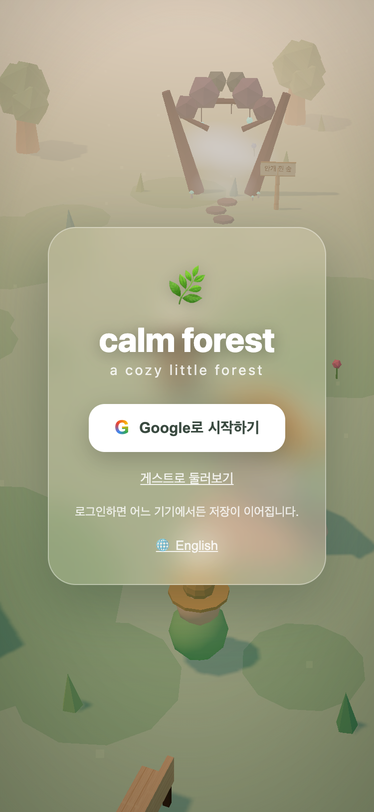
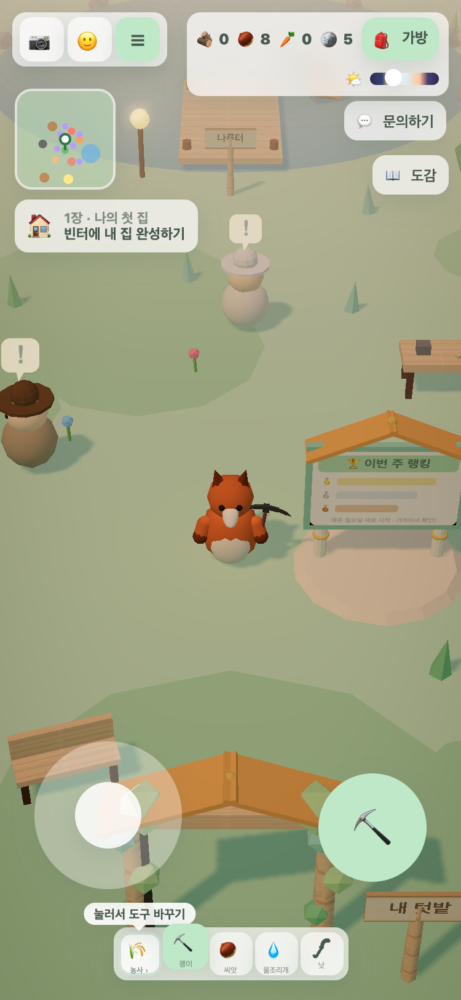
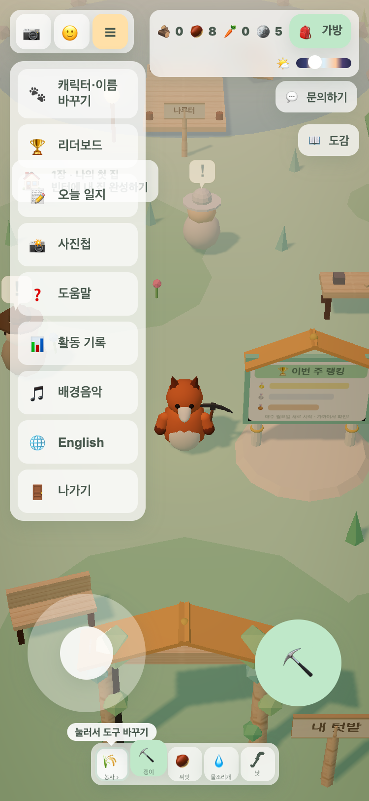
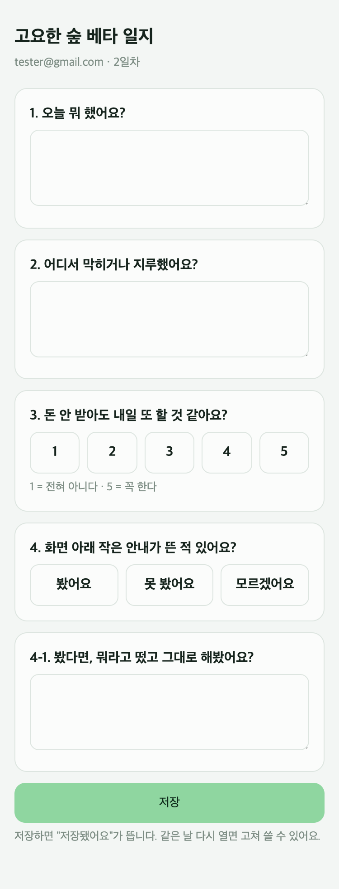

🌿 고요한 숲 베타 테스트 안내
9월 9일(수) ~ 9월 15일(화) · 7일 · 하루 10분 플레이 + 일지 3분
1접속하기 — 9월 9일에 꼭
폰이든 PC든 브라우저(크롬 권장)로 아래 주소를 열고, Google로 시작하기를 눌러 안내받은 구글 계정으로 로그인하세요.
https://calmforest.cloud
⚠️ 토스 앱에서 열면 안 됩니다. 토스에서는 구글 로그인이 없어서 테스터로 인식되지 않아요. 꼭 브라우저로 열어 주세요.
2매일 일지 쓰기 — 게임 안 ☰ 메뉴에서
게임 화면 왼쪽 위 ☰ 버튼을 누르면 메뉴가 열려요. 그중 📝 오늘 일지를 누르면 일지 창이 새 탭으로 열립니다.

1
① Google로 시작하기
안내받은 구글 계정으로

2
② 왼쪽 위 ☰ 버튼
게임 중 언제든 눌러요

3
③ 📝 오늘 일지
새 탭으로 일지가 열려요
메뉴에서 못 찾으면 주소로 바로 열어도 돼요 → https://calmforest.cloud/beta/diary
3일지는 이렇게 생겼어요

매일 4문항 · 저장 누르면 끝
같은 날 다시 열면 고쳐 쓸 수 있어요
- 매일 한 번 써 주세요. 3분이면 됩니다. 일지는 그날 것만 열려요 — 놓치면 그날 칸은 비어요.
- 2번 "어디서 막히거나 지루했어요?"가 제일 중요해요. 사소한 것도 그대로 적어 주세요 — "버튼이 어딨는지 몰랐다", "이게 뭔지 모르겠다" 같은 것.
- 9월 15일(화) 마지막 날에는 문항이 2개 더 붙어요. 그날 꼭 써 주세요.
- 게임 안에서 "○일차에 열려요"라고 뜨는 곳이 있어요. 잠긴 게 아니라 그날 열리는 거니까 기다리시면 됩니다.
- 화면 아래에 작은 안내가 잠깐 떴다 사라질 때가 있어요. 뭐라고 떴는지 기억해 두면 4번 문항에 도움이 됩니다.
- 버그나 이상한 점은 일지 2번에 쓰거나, 게임 오른쪽 💬 문의하기로 바로 보내 주세요. 스크린샷이 있으면 더 좋아요.
- 다른 테스터와 게임 얘기는 자유지만, 일지는 본인 느낌으로 써 주세요.
보상
7일 접속 + 일지 7회를 채우면 약속한 보상을 드려요.
금액·방법:
마지막 날 설문 뒤에 이번 테스트가 무엇을 봤는지도 알려드릴게요.